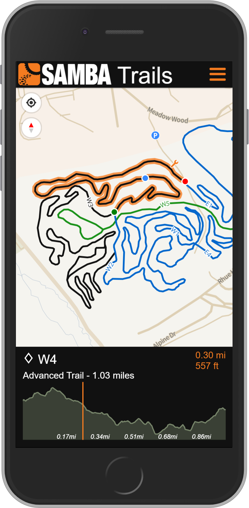

6/11/2020
My main hobby these days is mountain biking. I love it. Being in nature, getting excercise, challenging myself and giving me thrills all at the same time.
This spring brought my two passions of maps and biking together for a project with my local group, Susquehanna Area Mountain Bike Association (SAMBA).
I am excited to announce the release of SAMBA's new trails web app sambatrails.bike This trails map was designed to be mobile first, but obviously works just the same on a desktop computer. It has a complete list of all the trail systems they maintain and locates all the regional sponsors to the organization. A ride schedule is posted under the menu button as well, which is fed by a shared google sheet acting as a light database for this info.
I used Mapbox GL as the map API and was my first big project using this particular library. Mapbox GL feeds vector tiles and allows for continuous zoom along with map rotation. While I do love Leaflet, the right choice for a map with a mobile focus and purpose like this is Mapbox GL. I used a custom basemap, very closely based off an existing map titled Frank. A map style inspired by Frank Lloyd Wright is the tagline for this map designed by Clare Trainor. As a fan of Frank's work, especially his Usonian period, it was no question I was drawn to this awesome map style.
In later posts, I will touch on some of the code details including building the elevation profile. The elevation profile was created in vanilla JavaScript and was easily the most complicated part of the build. I wanted to create it from scratch myself so the choice to not use any existing libraries was purposeful.
Pennsylvania has some great mountain biking which I believe is under appreciated. Hopefully sambatrails.bike will help people get out and shred!